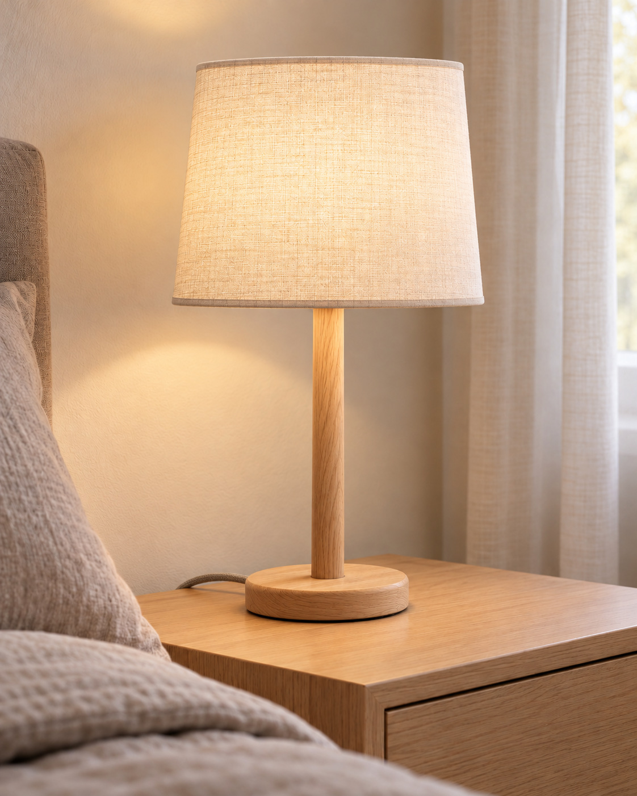
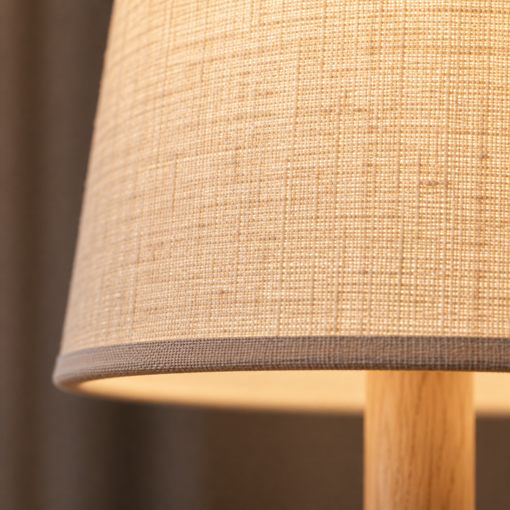
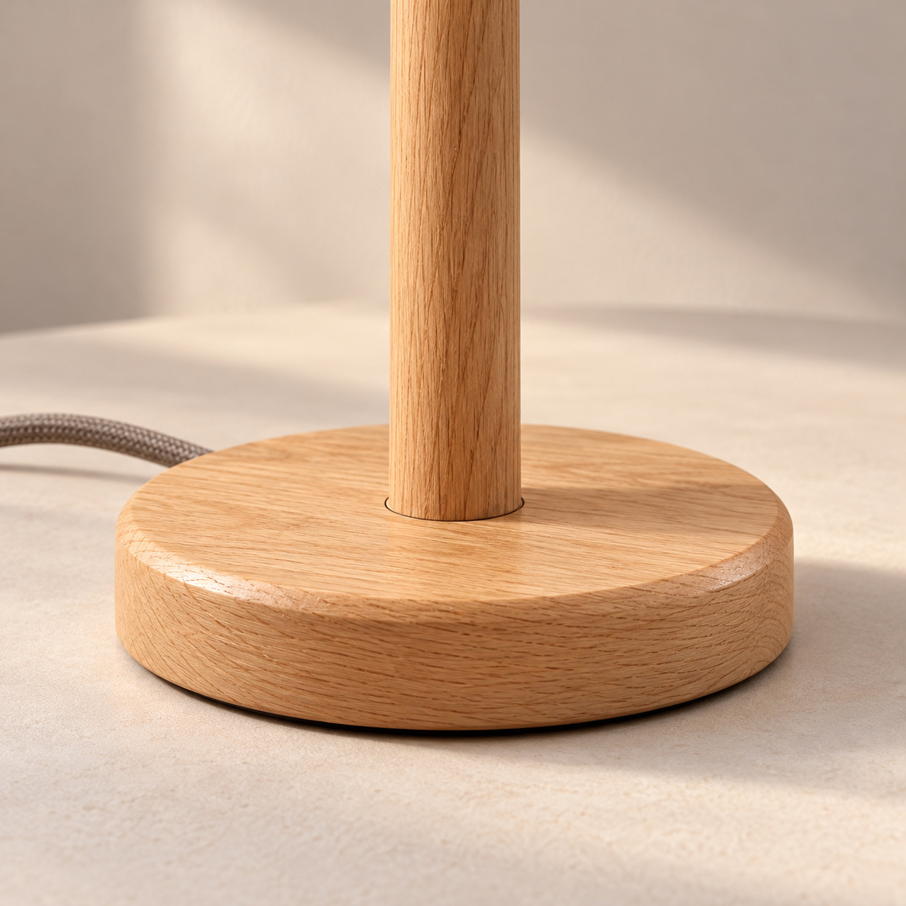
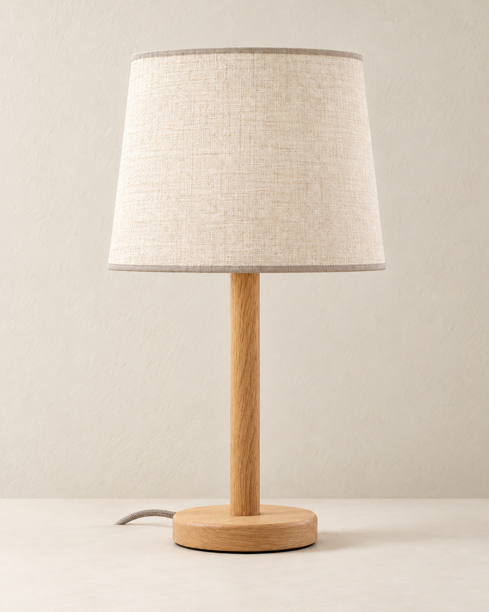
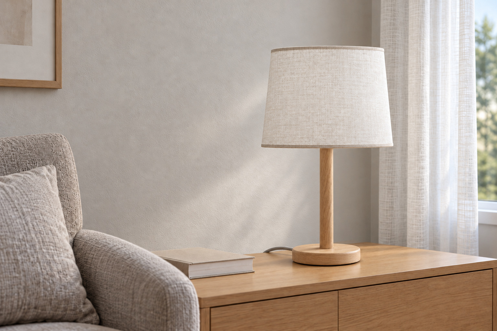
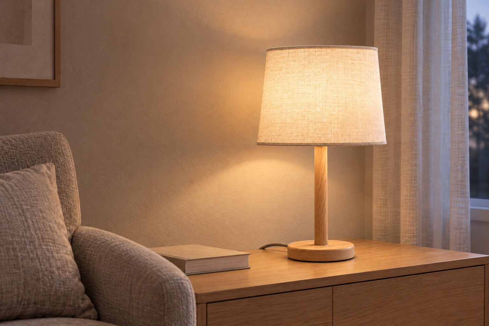
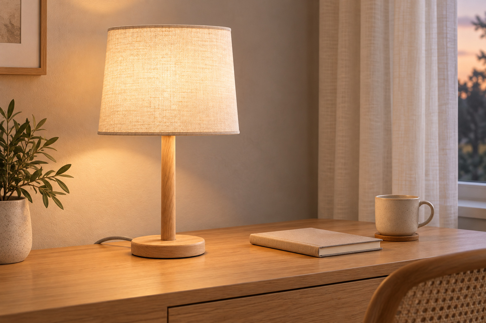

빛에 표정을 더하는
패브릭의 결
불을 켰을 때도, 껐을 때도
잔잔하게 드러나는 직조감.
빛을 머금은 패브릭의 고운 결,
담백하게 이어지는 내추럴 우드 톤.
익숙한 방 한켠에
머무르고 싶은 분위기를 더합니다.

하루 종일 익숙했던 공간도
어디에 빛을 두느냐에 따라 다른 장면이 됩니다.
소파 옆 작은 테이블, 침대 곁 비어 있던 자리.
크게 꾸미지 않아도 괜찮습니다.
자주 머무는 곳 가까이에,
내 취향의 빛을 하나 놓아보세요.
불을 켰을 때도, 껐을 때도
잔잔하게 드러나는 직조감.
화이트와 베이지, 우드 가구에
자연스럽게 연결되는 색감.
익숙한 갓과 가느다란 기둥,
둥근 받침의 담백한 균형.

매끈한 표면에는 없는 작은 표정.
잔잔한 짜임이 살아 있는 패브릭 갓은
불을 켜면 빛과 질감이 함께 드러납니다.
같은 톤으로 정돈한 얇은 테두리까지.
멀리서는 단정하게,
가까이서는 섬세하게 보이도록 완성했습니다.
곧게 이어지는 기둥과
부드럽게 모서리를 다듬은 둥근 받침.
결이 보이는 우드 톤이
심플한 형태에 자연스러운 깊이를 더합니다.
밝은 가구와는 편안하게 어우러지고,
무채색 공간에서는 따뜻한 포인트가 됩니다.
소품을 더하기보다, 색과 질감으로 채워보세요.

완만하게 좁아지는 갓,
시선을 가볍게 잇는 가느다란 기둥,
형태를 단정하게 마무리하는 둥근 받침.
어느 한 부분도 과하게 드러내지 않아
공간의 주인공인 가구와 자연스럽게 어울립니다.
불을 끈 낮에도,
그 자리에 놓인 모습이 편안하도록.

자연광 아래에서는 소재의 질감을,
저녁에는 빛이 머무는 분위기를 즐겨보세요.


시간대별 분위기를 비교하는 연출 사진입니다. 밝기·색온도 조절 기능이나 실제 광량을 시연한 것이 아닙니다.
공간을 바꾸기 전에,
자주 머무는 자리부터 골라보세요.
부드러운 침구와 결이 느껴지는 갓.
협탁 위의 익숙한 소품들이
한결 차분한 장면으로 이어집니다.
콘솔이나 사이드 테이블에 더한 빛 하나.
가구를 가리지 않는 단정한 형태로
하루의 마지막 시간을 채워보세요.

노트 한 권, 머그 하나, 따뜻한 우드 톤.
일과를 마친 책상에
작은 휴식의 장면을 더해보세요.
공간 제안용 연출 이미지이며, 독서·작업용 조도의 적합성을 보증하지 않습니다.
아이보리 패브릭이나 베이지 소품처럼
가까운 색 하나를 함께 두면
공간이 자연스럽게 연결됩니다.
갓의 윤곽이 드러나도록
주변 소품의 높이와 간격을 조절하면
단정한 형태가 더 잘 보입니다.
방을 드나들 때, 소파에 앉을 때.
자주 바라보는 자리에 놓으면
작은 변화가 일상에 가까워집니다.
색을 많이 더하지 않고도,
충분히 풍부한 분위기.
새로운 색을 크게 더하지 않고도 자연스러운 포인트를 만들고 싶을 때.
침실, 거실, 서재의 익숙한 한켠에 작은 변화를 주고 싶을 때.
패브릭 테두리와 우드 결처럼 가까이에서 보이는 마감을 즐길 때.
받침뿐 아니라 갓의 폭과 높이까지 고려해 주변 가구와 간섭이 없는지 확인해주세요.
커튼, 침구, 테이블의 톤과 연결하면 조명 하나만 따로 놓인 느낌을 줄일 수 있습니다.
분위기 연출과 독서·작업용 조명은 필요한 조건이 다릅니다. 실제 구매 시 크기·전원·광량과 기능을 확인해주세요.
밝은 우드 톤은 화이트·베이지·웜그레이처럼 중립적인 색과 연결하기 좋습니다. 아이보리 갓이 함께 있어 우드 가구가 많지 않은 공간에도 따뜻한 포인트로 제안합니다. 위의 공간별 연출에서 조화를 살펴보세요.
오프화이트 패브릭의 짜임과 우드 톤의 결이 담백하게 드러납니다. 별도의 장식이 없는 갓·기둥·받침의 형태라, 불을 끄고 놓아둔 모습도 공간과 자연스럽게 이어지도록 디자인했습니다.
이 페이지는 무드 연출을 중심으로 만든 포트폴리오 샘플이며, 실제 독서·작업용 조도는 확인되지 않았습니다. 실제 제품을 구매할 때는 필요한 밝기와 사용 목적에 맞는 공식 사양을 확인해주세요.
사진은 전선이 있는 탁상 조명 콘셉트입니다. 무선·충전·터치·밝기 조절 기능은 설정하지 않았으며, 낮·저녁 버튼은 연출 사진을 비교하는 기능입니다. 실제 제품의 기능을 시연하는 화면은 아닙니다.
MOTIF가 제품 외형과 사진, 문구, 상세페이지를 기획·디자인한 자체 포트폴리오 샘플입니다. 실제 판매 상품이나 고객 납품 사례가 아니며, 주문·결제·판매는 제공하지 않습니다.
익숙한 형태에 담은 섬세한 질감.
패브릭과 우드 톤이 만드는 따뜻한 장면을 만나보세요.